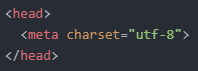
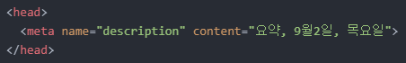
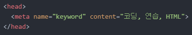
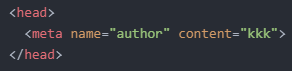
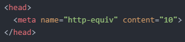
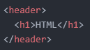

<'meta' 태그>
가장 먼저 살펴볼 것은 'meta' 태그입니다.
이렇게 말이죠.
위와 같이 코드를 작성해줍니다.
위와 같이 코드를 작성해줍니다.
위와 같이 코드를 작성해줍니다.
위와 같이 코드를 작성해줍니다.<의미론적 태그>
의미론적 태그란 구조(structure)를 정의하는 태그입니다.
| 태그 | 기능 |
|---|---|
| article | 본문 정의 |
| aside | 광고와 같이 페이지의 내용과는 관계가 적은 내용들을 정의 |
| details | 기본적으로 화면에 표시되지 않는 정보들을 정의 |
| figure | 삽화나 다이어그램과 같은 부가적인 요소를 정의 |
| footer | 화면의 하단에 위치하는 사이트나 문서의 전체적인 정보를 정의 |
| header | 화면의 상단에 위치하는 사이트나 문서의 전체적인 정보를 정의 |
| main | 문서에서 가장 중심이 되는 컨텐츠를 정의 |
| mark | 참조나 하이라이트 표시를 필요로 하는 문자를 정의 |
| nav | 문서의 네비게이션 항목을 정의 |
| section | 문서의 구획들을 정의 |
| time | 시간 정의 |
